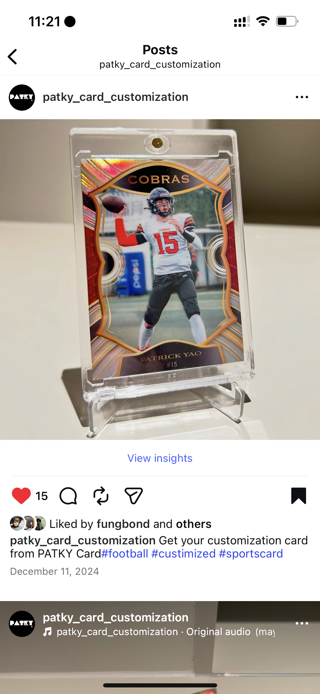
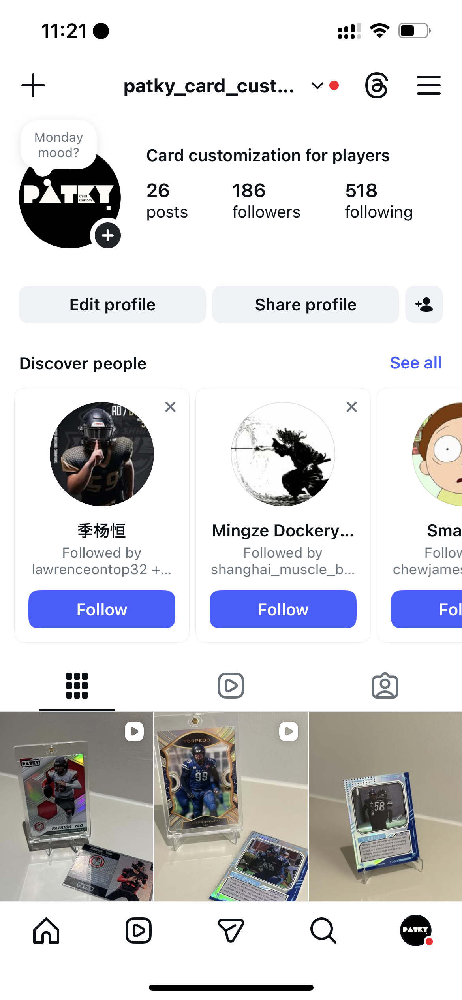
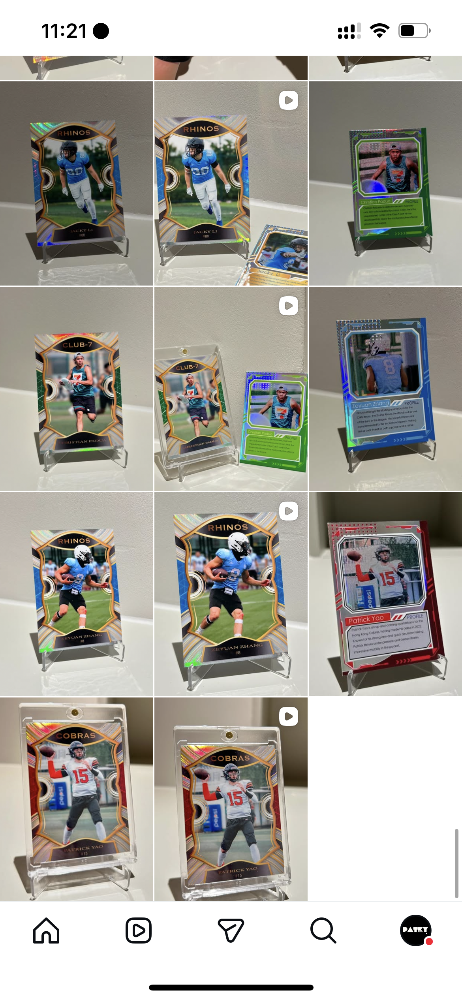

Patky was born directly from the lessons I learned after Hoopers. My first venture taught me that innovation requires both technical excellence and a deep understanding of real human needs. Hoopers collapsed during incubation not because the engineering was weak, but because we had built an impressive solution for a problem amateur athletes did not actually care about. That failure reshaped my approach to entrepreneurship: start with the human problem, then build the technology around it.
When I stepped back, I realized that many amateur athletes were not looking for analytical feedback. Instead, they wanted ways to express identity, feel recognized, and celebrate their athletic journey. Guided by that insight, I built Patky Sports Card, a small venture that creates personalized trading cards for amateur players—something fun, shareable, and emotionally meaningful.
Early production was slow, with segmentation, layer alignment, and bio writing taking hours per card. To make the product scalable, I integrated SAM3 for fast and accurate player segmentation, automated Photoshop-style layer handling, and generated bios using prompt-engineered scripts. These tools reduced card creation time from hours to minutes while maintaining consistent quality.
Patky quickly found strong organic demand. We have served 200+ customers, partnered with teams across Hong Kong and Zhuhai, and now sustain a modest but steady revenue of roughly HKD 2,000 per month. Unlike Hoopers, Patky succeeded because it was built around what people genuinely valued. It reinforced a principle I carry into every project now: technology becomes meaningful only when it resonates with real people.

